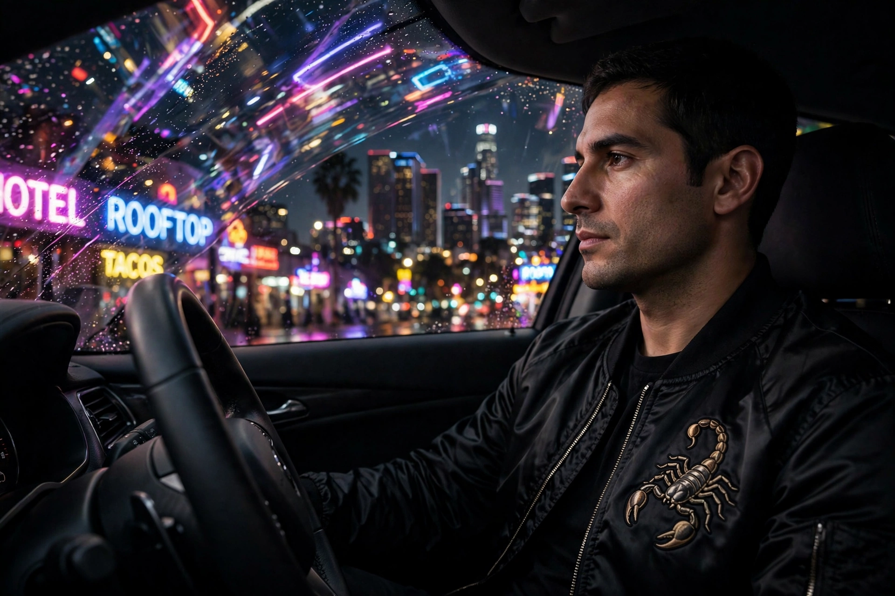

Drive (2011 film)
Drive is a 2011 American neo-noir crime drama film directed by Nicolas Winding Refn, written by Hossein Amini, and based on James Sallis's 2005 novel. Ryan Gosling stars as an unnamed Hollywood stunt driver who moonlights as a getaway driver; drawn to his neighbour Irene (Carey Mulligan) and her son, he agrees to help her husband's robbery, which goes catastrophically wrong and brings him into violent conflict with mobsters played by Albert Brooks and Ron Perlman. Refn won Best Director at the 2011 Cannes Film Festival.

| Drive | |
|---|---|
| Directed by | Nicolas Winding Refn |
| Screenplay | Hossein Amini |
| Based on | Drive (2005) by James Sallis |
| Starring | Ryan Gosling, Carey Mulligan, Bryan Cranston, Albert Brooks, Oscar Isaac, Ron Perlman |
| Cinematography | Newton Thomas Sigel |
| Music | Cliff Martinez |
| Released | 2011 |
| Budget / box office | $15 million / $81.4 million |
Plot
The Driver works in a garage run by Shannon, drives for films by day and for criminals by night, giving clients a strict five-minute window. When Irene's husband Standard returns from prison owing protection money, the Driver joins a pawnshop heist meant to settle the debt; Standard is killed and the Driver realises the robbery was a setup in a mob war over money stolen from the East Coast mafia. To protect Irene, the Driver methodically eliminates the men hunting them — Shannon is murdered, and the campaign ends with a knife fight on a beach and the Driver, wounded, driving away into the night, leaving Irene behind.
Style and reception
Drive is noted for its synthesis of art-house minimalism and sudden graphic violence, its synthwave-inflected soundtrack (including Kavinsky's "Nightcall" and College's "A Real Hero"), and Gosling's near-silent performance and iconic scorpion-embroidered jacket. Marketed as a conventional action film, it divided general audiences but became a major critical and cult success, frequently cited as a defining neo-noir of the 2010s. It received one Academy Award nomination, for sound editing.
See also
Recreated from memory as part of the muse-webcrawl project.